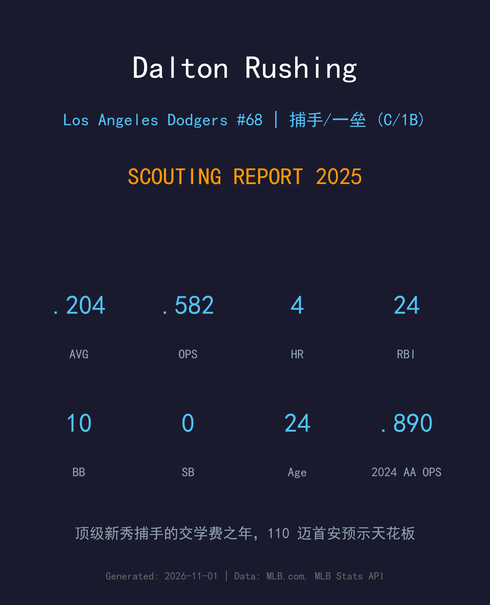
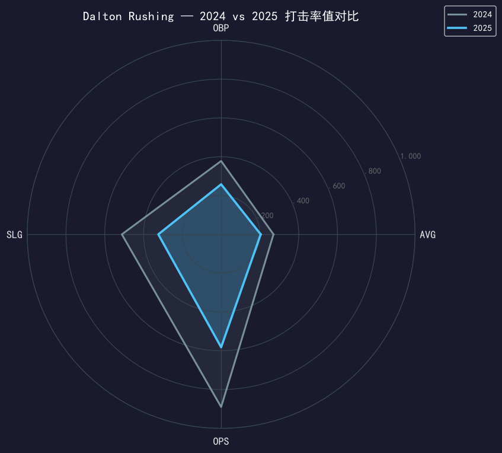
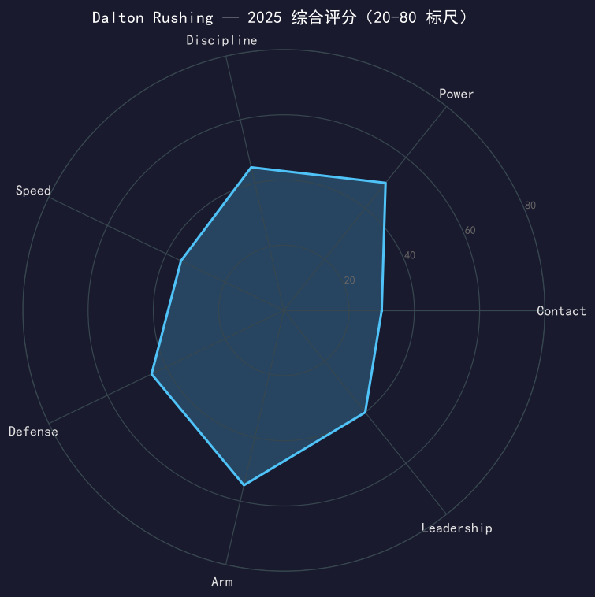

Los Angeles Dodgers #68 | 捕手/一垒 | 左打 | 顶级新秀捕手

⚠️ 小样本警告：本报告基于 155 个大联盟打席的新秀赛季数据，结论仅供方向参考。
Dalton Rushing 的处子赛季是典型的「顶级新秀交学费」剧本：.204/.258/.324、OPS .582 的率值相当难看，58 次三振（三振率 37.4%）暴露了从 2A 跳到 MLB 的最大适应难题——大联盟的球速与变化球识别。但 24 分打点放在 155 个打席里（每 6.5 个打席 1 分打点）展现了他的打点击球与得点圈嗅觉，这也是他选秀报告里「advanced bat」标签的残余证据。
他的大联盟首安是 110 英里/小时的平飞球——那种击球初速不会说谎。2025 年他是 Will Smith 身后的保险与一垒备胎（41 场蹲捕 + 8 场一垒），季后赛只在 NLDS G3 获得 1 个代打打席。道奇对他的投资周期是以五年为单位计算的，一年的挣扎不会改变他是「Smith 接班人」的内部定位。
2A Tulsa 77 场缴出 .270/.378/.512、17 轰 59 打点，升上 3A Oklahoma City 后 37 场 .273；获队史 Branch Rickey 小联盟年度最佳击球手奖，Baseball America 小联盟全明星。
对运动家先发蹲捕：生涯首安是 110 mph 的平飞一垒安打，单场 2-for-4、3 得分 1 保送——用一场完美比赛开启大联盟生涯。
5 月 31 日对扬基轰出生涯首轰（393 英尺，右外野）；6 月 22 日对国民单场 4 个打席全部上垒（1 安 1 二垒打 2 保送）。

| 赛季/级别 | G | PA | AVG | OBP | SLG | OPS | HR | RBI | 2B | BB | SO |
|---|---|---|---|---|---|---|---|---|---|---|---|
| 2024 (2A Tulsa) | 77 | - | .270 | .378 | .512 | .890 | 17 | 59 | - | - | - |
| 2025 (MLB) | 53 | 155 | .204 | .258 | .324 | .582 | 4 | 24 | 5 | 10 | 58 |
从 2A 直接跳级大联盟，率值全面跳水是预期内的「学费」。值得乐观的三件事：第一，三振率高但保送率（6.5%）没有崩，说明选球框架还在；第二，24 分打点效率极高，打点击球能力率先翻译成功；第三，他的 power 工具在 2A 是 .512 SLG 级别的精英，只是大联盟投手暂时不给他发挥空间。2023 年他在高阶 1A 的 .404 OBP 提醒我们：这个年轻人的上垒底子比 2025 年显示的好得多。
37.4% 的三振率是必须直视的红灯。Rushing 的挥棒偏长，对 95+ mph 的快速球和边缘变化球的识别还在学习阶段——这是所有跳级新秀的通病，但他的严重度偏高。好消息是：小联盟时期他从未有三振危机（2024 年 2A 保送率 14%+），说明问题主要是「面对更强投手的适应」而非「挥棒缺陷」。
155 个打席 24 分打点、多支得点圈关键安——这种「把跑者送回家」的能力很难教。他的 debut 之夜（3 得分）、6 月 22 日的全上垒之夜都显示：当比赛变慢时，他的击球质量会立刻上升。这对一个 24 岁新秀是罕见的比赛感觉。
41 场蹲捕（37 场先发）+ 8 场一垒，道奇已经开始为他铺设「C/1B 双位置」轨道——这既是对他臂力与挡接的信任，也是对他 bat 的保护性开发。在一垒的 8 场出赛尤其值得注意：那可能决定他未来是大联盟主力还是顶级轮换。
从春训的非名单邀请到大联盟首秀只用了两个月；从 110 mph 的首安到 58 次三振，这一年给他上了完整一课。他在道奇深度图上的位置没有动摇：Smith 的备份、一垒的备胎、以及——如果一切顺利——道奇未来五年的主战捕手候选。

交学费的新秀年；潜力评分指向 55+ 的未来天花板
C+ 级 / 新秀观察期（小样本警告）
道奇 2025 季后赛之路：外卡轮 2-0 红人 → NLDS 3-1 费城人 → NLCS 4-0 酿酒人 → 世界大赛 4-3 多伦多蓝鸟（二连霸）。
Dalton Rushing 的未来时间表清晰：2026 年从 Smith 的 40-50 场备份打起，继续一垒轮换积累打席；如果三振率能压回 25% 以下，他会在 2027-28 年进入「接班窗口」。道奇对顶级新秀捕手的耐心有先例可循——Smith 自己当年也是这样等来的位置。
短期：改进对快速球的反应时间，把三振率压到 25% 以下
中期：确立 C/1B 双位置价值，年出赛冲到 90+ 场
长期：Will Smith 合约周期内的指定接班人，道奇 2030 年代的主战捕手
Dalton Rushing 出生于田纳西州孟菲斯，在路易斯维尔大学打出名声后，2022 年选秀第 2 轮第 40 顺位被道奇选中。这个顺位让他成为道奇七年内第三位进入前 40 的路易斯维尔校友——排在他前面的是 Will Smith（2016 年第 32 顺位）和 Bobby Miller（2020 年第 29 顺位）。他与 Smith 的传承关系，从选秀那天就写好了。
小联盟三年他一步一台阶：2023 年高阶 1A 轰 15 支全垒打并入选未来之星赛（Futures Game）；2024 年 2A Tulsa 的 .890 OPS 让他包揽 Branch Rickey 小联盟年度最佳击球手与 Baseball America 小联盟全明星。2025 年 5 月 15 日，他在对运动家的比赛中完成大联盟首秀——首安 110 mph 平飞球、单场 3 得分，用一个完美的夜晚回答了所有期待。
从孟菲斯到路易斯维尔再到洛杉矶，Rushing 的每一步都在计划表上。新秀年的挣扎只是这张长图上的第一个小坑。